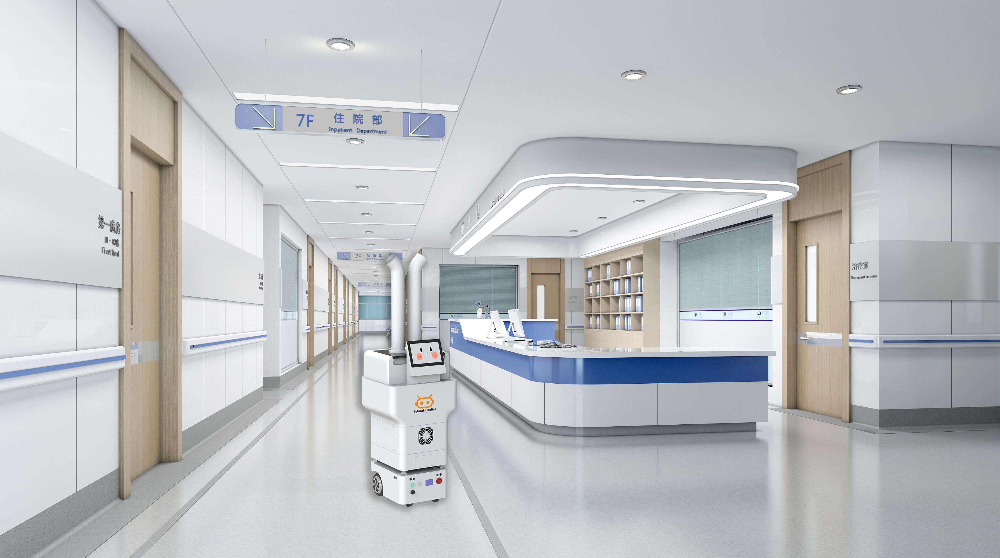

消毒机器人如何助力医院感染（院感）防控？移动消毒在感控中的价值

院感防控是医院的底线。传统人工消毒存在死角、浓度不均、人员暴露等痛点，移动消毒机器人正在成为感控的常态化装备，把“定时、定量、全覆盖”变成可执行的日常流程。
两类消毒路线
双擎消毒机器人含喷雾与紫外线两类。喷雾型净宝 FS01、消消 FS03 支持过氧化氢/次氯酸雾化，消消出雾量达 2250ml/h，可对空气与物表进行弥散式消毒；紫外线型海葵 / FU1（U1）采用 UVC 紫外线消毒，并获 CE 认证，适合无人环境下的物表辐照。两条路线对应不同场景与排班约束，医院可按需组合使用。
场景与合规
适用于病房、手术室、公共区域等，具备消毒产品备案，可按需设定消毒路径与剂量，减少人员与消毒剂接触暴露。对院感管理而言，机器人能把消毒作业标准化、可追溯，辅助提升环境物表消毒的规范性，把“靠人盯”变成“靠流程”。
与医院物流的协同
消毒机器人可与医院配送 AMR 同属双擎具身智能产品矩阵，在“整院机器人方案”中分工协作：物流机器人负责物资流转，消毒机器人负责环境保障，二者都可接入统一调度思路，支撑从配送到消毒的一体化能力，减少跨系统协调成本。
落地价值
移动机器人能把“定时、定量、全覆盖”变成可执行的日常流程，辅助提升环境物表消毒的规范性与可追溯性。在感染高发季或突发公共卫生事件中，可快速投入重点区域循环作业，成为院感防控的弹性力量。
小结
消毒机器人不是替代人工，而是把重复、高危的消毒作业标准化、规范化。双擎两类消毒路线覆盖了从空气物表弥散到无人环境辐照的不同场景，让院感防控多了一层可执行的自动化保障，也明显减轻了人员在消毒作业中的消毒剂暴露风险。